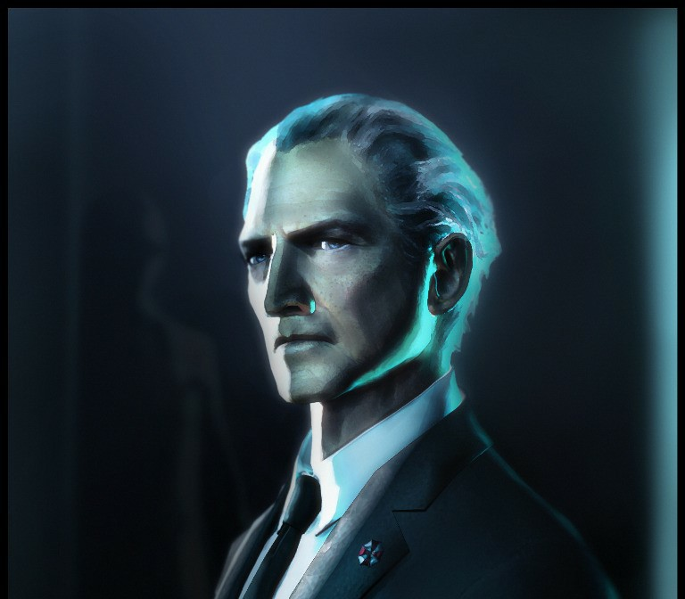
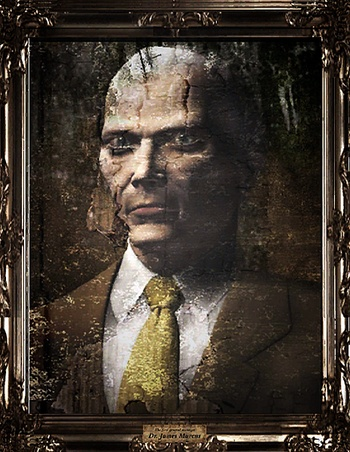

Spencer, Oswell E.
Fundador
Presidente y CEO de Umbrella (1968-2004)

Fundador
Presidente y CEO de Umbrella (1968-2004)

Director de Investigación y Desarrollo

Virólogo
Desarrollador del virus G y el virus G modificado.

Genetista
Socia de investigación del virus G.